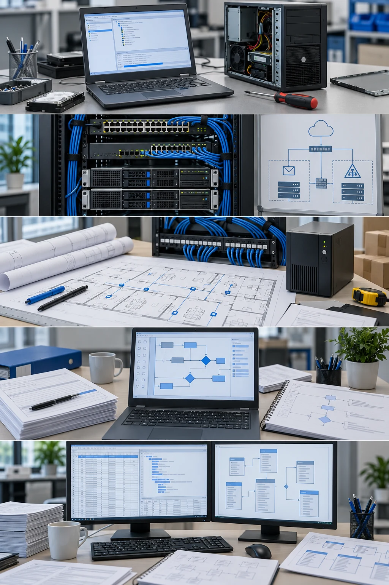
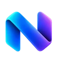
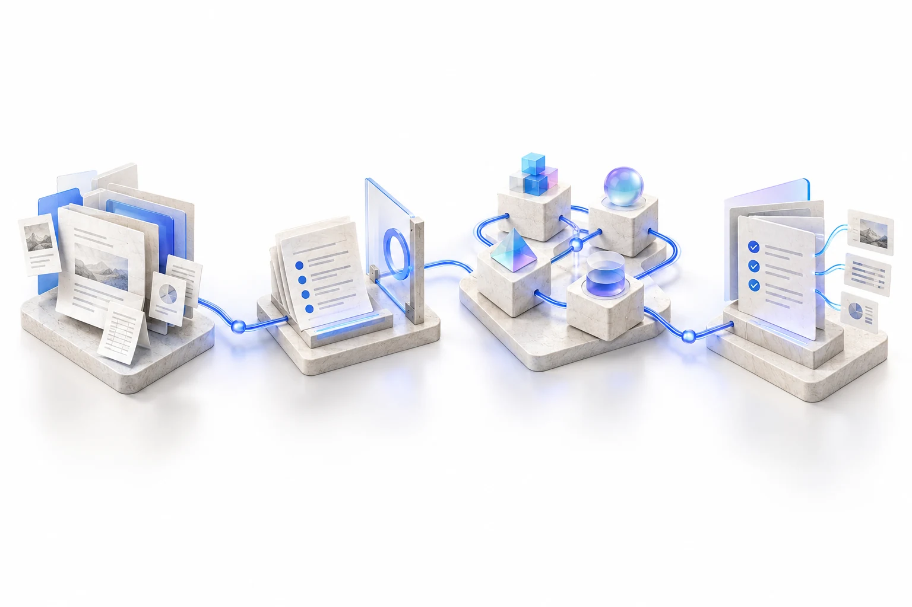

Dell · 2006 · Latitude / OptiPlex support
Start with the real problem.
Latitude and OptiPlex support on Dell's Gloves Off team. Time to understand the fault, resolve the issue on the first call and reduce callbacks.
CAREER JOURNEY · TECHNICAL DEPTH · BUSINESS IMPACT
From diagnosing hardware to designing enterprise solutions, I’ve spent 20 years connecting technology, systems and people — including about 17 years in insurance. Today, I bring that foundation to cloud architecture, automation and AI.
Each new responsibility builds on what came before. Support became systems. Systems became insurance integrations. Today, that foundation shapes how I approach solutions.
Illustrative scenes. Mobile starts still; play any scene to explore it.

Dell · 2006 · Latitude / OptiPlex support
Latitude and OptiPlex support on Dell's Gloves Off team. Time to understand the fault, resolve the issue on the first call and reduce callbacks.
Harris · 2007–2009 · NOC and infrastructure projects
From NOC work to racks, networks, identity and email. Repeatable Small Business Server swing migrations made the relationships between services impossible to ignore.
Grenville · within 2009–2022 · overlapping work
A headquarters is more than a network diagram. I worked from technical design through the build and move, connecting physical constraints with what the business needed to operate.
Operational dependencies became a practical foundation for analysis and design: understand what needs to keep working while something changes.
Grenville · business rules, broker workflows and integration
Bring business meaning across the interface. I designed and implemented policy rules and worked through broker requirements, payload mappings and integration failures.
Current professional work · Medavie · 2022–present
Understand the current state. Shape the change. My work connects provider/B2B integration requirements, claims-data transitions and the reporting detail that helps a solution hold together.
The modern reporting exchange remains a proposal; continuity mapping is completed analysis/design. Current work continues alongside the independent builds below.
NEXUS brings the career foundation together: business context, system boundaries, deliberate execution and evidence. My independent capstone keeps me close to implementation while the professional work continues.

Scoped context, explainable routing and recoverable execution. An AI-assisted work system in active development.
Run NEXUS run.nexus (opens in a new tab)Capstone case studyProfessional work continues at Medavie. NEXUS grows alongside it as my capstone.
Support, systems, infrastructure, analysis and solution design: overlapping chapters that build toward architectural work.
2006–2009

Technical support / NOC & project technician
I joined Dell in September 2006, supporting Latitude laptops and OptiPlex desktops on the ‘Gloves Off’ team. We could spend more time with a client to resolve the issue on the first call and reduce callbacks. At Harris, that support foundation grew into NOC work, complete rack installations and migrations across connected services. I learned to follow the real problem across hardware, networks, identity and email—and to make the process repeatable.
Career evidence: Josh’s first-person account, supported by the earlier career résumés. No resolution-rate metric is asserted.
At Dell, first-call resolution and fewer callbacks mattered more than optimizing each call’s duration. At Harris, I installed, updated and replaced NOC nodes, handled password/email resets and desktop/laptop support, then worked on client rack installations and Harris’s own firewalls, switches and servers. Exchange, BlackBerry Enterprise Server, Active Directory groups and Group Policy were part of that connected environment. I later moved to Grenville because I wanted to focus on one company.
2009–2022
Systems / network administration
At Grenville, I took headquarters technical infrastructure from design through the build and move, accounting for networking, AV, security, cooling and resilient power. I am proud of the smooth transition. The broader infrastructure work also included moving a bare-metal blade centre to ESXi. As a network administrator colleague took more daily operations, I moved toward projects and analysis, carrying forward a practical understanding of the dependencies that make a design work in real life.
Professional evidence: infrastructure planning and virtualization work; no internal diagrams published.
This chapter connects solution design with physical constraints, operational dependencies and hands-on implementation.
2010s–2022
Analysis, business rules and development · overlapping responsibilities
At Grenville, I personally designed and implemented P&C rating and underwriting rules. I connected that work to broker inquiry, new business, quoting and policy changes—diagnosing requests, testing integrations and directing UI changes to capture missing risk information. I helped shape messages that let users correct issues, refer for review or bind where allowed. Renewal automation sharpened the same principle: classify eligible standard cases, while preserving a clear path for human judgment.
Evidence: Josh’s first-person account and prior career sources. Rules architecture is a responsibility, not an invented formal title.
Broker desktop clients used SOAP/XML requests; the backend later used REST. TAM and Epic integrations worked through Brovada. I mapped and transformed fields and values across CSIO/ACORD payloads and proprietary backend fields. Toward the end of Grenville, I performed current/future-state analysis and wrote specifications for a planned restructuring of policy administration, business classes and organization. This was analysis/design work, not a delivered replacement platform.
2022–present
Functional analyst / claims architecture work
At Medavie, I work across the detail of claims systems and the design of change. That includes provider-integration requirements, an Excel tool that turns inconsistent takeover history into validated XML, and hand-written SQL and financial report reconciliation. A supposed reporting assignment turned out to be a daily ETL integration. Understanding that distinction shaped the continuity mapping and the modernization proposal. The recurring question is practical: what has to keep working while the system changes?
Evidence: current first-person account, supported by earlier career sources. Delivered tooling, completed analysis and open proposals are distinguished in the case studies.
The reporting continuity mapping is analysis/design; the modern Power BI or alternative exchange remains a proposal. The provider-registry case confirms solution review, mappings and scheduled synchronization requirements. Frontend-replacement details stay in draft until their exact scope is confirmed. Employer financial totals, private schemas and claim data are omitted.
TodayIndependent projects
Hands-on software and systems design
Independent projects give me room to work directly with new tools and practical constraints. NEXUS applies my systems experience to AI-assisted work with context, control and evidence. These projects keep the feedback loop close: build something, inspect how it behaves, and use what I learn to shape the next iteration.
Evidence: implemented NEXUS software mechanisms; the broader product remains in active development.
NEXUS remains in active development. Project studies distinguish implemented mechanisms from the broader product vision.
Each chapter adds to the foundation.
Professional stories first, then the independent builds that keep me learning.
From a hardware fault to an insurance rule or a claims-data transition, the scope has grown. These stories show the decisions, implementation and lessons that connect the work.
Periods are approximate where project dates are not established. At Grenville (2009–2022), infrastructure, analysis and development overlapped; each new responsibility built on what came before.
Sept 2006 – 2007Dell
Latitude and OptiPlex hardware support on Dell's Gloves Off team—spending the time needed to isolate the fault on the first call and reduce callbacks.
Technical Support Specialist (Gloves Off Team)
Read the case study2007 – 2009Harris Computer Services
Developed a repeatable swing-migration process separating combined Small Business Server environments into dedicated Active Directory and Exchange servers.
NOC & Project Technician
Read the case studyBuild completed 2012; occupancy January 2013Grenville
Carried technical requirements through the headquarters build and move; separately recommended and implemented staged ESXi virtualization.
Technical Design · Infrastructure Build · Virtualization
Read the case studyWithin Grenville tenure (2009–2022)Grenville
Connected broker inquiry workflows to policy, billing and claims data plus downloadable PDF documents.
Business Analysis · Mappings · Integration Testing
Read the case studyWithin Grenville tenure (2009–2022)Grenville
Connected broker workflows to insurance rules, validation, referral and binding decisions.
Requirements · Field Mapping · Rules Implementation
Read the case studyWithin Grenville tenure (2009–2022)Grenville
Designed commercial quoting rules, CSIO/ACORD payload mappings and two-way broker integration workflows.
Policy Rules Implementation · Mapping & Specification
Read the case studyWithin Grenville tenure (2009–2022)Grenville
Tested endorsement comparison rules, identified false positives and recommended stopping an unsustainable approach.
Analysis · Policy Rules · UI/Integration Design
Read the case studyWithin Grenville tenure (2009–2022)Grenville
Built fail-first renewal rules that process eligible policies and give underwriters focused reasons to review exceptions.
Analysis · Rule Design · Implementation · Support
Read the case studyApprox. 2018Grenville
Built an authenticated C#/.NET document-submission service and a separate integration-support tool for recurring faults.
Systems Analyst · Hands-On Developer
Read the case study2022 – PresentMedavie
Defined provider mappings and synchronization changes, then supported the live integrations in testing and production.
Functional Analysis · Mapping · Testing · Production Support
Read the case study2022 – PresentMedavie
Designed and built a production Excel VBA add-in for validation, XML generation, batch preparation and returned-error reconciliation.
Solution Design · VBA Development · Validation · Support
Read the case study2022 – PresentMedavie
Traced a reporting request to downstream data dependencies, delivered interim SQL and designed a compatibility path.
Current-State Analysis · Continuity Mapping · Modernization Proposal
Read the case study2022 – PresentMedavie
Reworked claims and financial SQL, reconciled transaction history and supplied corrected logic adopted in production.
Functional Analyst · SQL Development · Reconciliation
Read the case studyThe same curiosity, with a closer build-and-learn loop.

Active development
Context, decisions and execution, connected.
An AI-assisted work system with scoped context, explainable model routing, evaluation and recoverable execution.
TypeScript · React/Vite · PostgreSQL · Redis
Inside NEXUSI like understanding how things fit together—and getting into the details that make them work.
I started in hardware support at Dell, where we had time to work through a client’s problem. At Harris, the scope grew from NOC work to racks, networks, identity and email migrations. I moved to Grenville because I wanted to focus on one company, and the work grew with me: headquarters infrastructure, insurance rules, broker integrations and hands-on development.
At Medavie, I bring that foundation into claims analysis, integration requirements, data transitions and reporting. I still like getting into the implementation: building an Excel tool, writing SQL or tracing an interface failure. That detail helps me see what a solution will ask of the people and systems around it.
I am interested in business architecture and AI strategy grounded in that delivery experience: understand the problem, assess the options and guide the change. Outside work, NEXUS keeps that build-and-learn loop going.
Away from the screen: Workshop42 (opens in a new tab).
See what I’m buildingThis private prototype includes a career overview. A tailored résumé download has not been attached yet.
NEXUS · Active development · Active development
Product Direction · Architecture · AI-Assisted Implementation
An independent platform in active development, exploring how context, model routing, tools, approvals and evaluation fit into useful AI-assisted work.
Brings scoped context, constrained model selection, planning and execution boundaries and an inspectable execution trail into one evolving work system. Current implementation, configuration-dependent behavior and future product goals remain distinct.
I set the product direction, architecture and module choices, using AI-assisted implementation to develop the platform. Source-described mechanisms are not a claim that every interface is live-qualified or every subsystem was independently hand-written.
Independent architecture and applied-learning capstone
AI Agents · Orchestration · TypeScript
This case distinguishes Josh's contribution from team and vendor implementation, and completed work from proposals. Employer artifacts and private records are not reproduced.
Personal · Archived independent project · Independent Build
Creator & Developer
Local speech-to-text inference using sherpa-onnx / Parakeet with a dedicated Rust worker on Windows and a native Kotlin keyboard on Android.
Built LOWKEY around AudioWorklet capture, Silero phrase detection, and cached sherpa-onnx / Parakeet models in a Rust / Tauri 2 desktop app and Kotlin Android IME.
I directed and developed the project with AI assistance. Stack and source evidence describe the implementation; they do not establish independent mastery of every language or a current supported release.
Local phrase capture and on-device decoding into native text fields
Local AI · Rust / Tauri 2 · Android IME · ONNX
This case distinguishes Josh's contribution from team and vendor implementation, and completed work from proposals. Employer artifacts and private records are not reproduced.
Make it tangible.
Selected physical projects, photographed as built.

Printed legs meet a wooden shelf. A practical desktop object shaped around structure, space and everyday use.
View Apex on MakerWorld (opens in a new tab)
A dual-color printed canoe model. A small exploration of shape, construction and the pleasure of making.
View Voyager on MakerWorld (opens in a new tab)Dell · September 2006 · early career
Latitude / OptiPlex hardware support
A hardware fault is disruptive enough without asking the client to keep calling back. On Dell’s Gloves Off team, we could spend more time working through the issue instead of optimizing each call’s duration.
I supported Latitude laptops and OptiPlex desktops. The team’s approach gave me room to investigate with the client and aim to resolve the issue on the first call. The useful work was to understand the symptom and the hardware involved, then explain the next steps clearly.
Spend enough time to work through the problem and reduce callbacks. Keep the person affected by the fault in view alongside the technical diagnosis.
The team’s approach was to spend enough time with a client to resolve the issue on the first call and reduce callbacks. This describes the support model I worked within; a numerical resolution rate is not established.
Latitude laptops · OptiPlex desktops · Hardware troubleshooting · Client communication
Josh’s first-person account confirms a September2006 start. The later Harris chapter follows the broad résumé-supported career period. No client records or numerical first-call-resolution result are included.
Harris · 2007–2009
NOC / project technician
Infrastructure changes touch several connected services. A server or network migration also affects email, directories and the people who depend on them.
Started with NOC node installation, updates and replacements, plus corporate password/email resets and desktop/laptop support. Progressed to full rack installations, switches, firewalls and servers for clients. Developed a repeatable swing-migration process from Small Business Server to separated infrastructure, with practical attention to preserving data and email. Also supported Harris’s internal firewalls, switches and servers.
Move from combined Exchange and Active Directory roles to separated infrastructure as the customer outgrows the original environment. Keep the data, email and identity dependencies visible through the migration process.
I developed a repeatable swing-migration process for customers moving beyond Small Business Server. Data and email preservation were central to the process, alongside the identity and service dependencies involved. The account does not establish a measured success rate or audited guarantee.
Network operations · Small Business Server · Exchange · Active Directory · Group Policy · BlackBerry Enterprise Server · Rack infrastructure
Josh’s first-person account expands the résumé-supported Harris NOC and infrastructure scope. Client examples include anonymized aeronautics, fitness and power-services businesses; public naming is not confirmed. Dates remain a broad career period.
Public summaries describe the work without publishing employer-confidential artifacts or claiming sole ownership.
Grenville · Implemented · Build completed 2012; occupancy January 2013
Technical Design · Infrastructure Build · Virtualization
Connected networking, servers, cabling access, AV, physical security, cooling and backup-power requirements from early building plans through the operational move.
Worked with colleagues, trades and vendors on technical requirements and setup. The move involved planned downtime, a storage failure and collaborative recovery; the business was back up by Monday in Josh's account. Virtualization was a separate, undated initiative.
I developed technical requirements and diagrams, gathered recommendations for shared decisions, coordinated vendors and personally set up the network and servers. I did not own the entire building project or its budget.
Headquarters technical delivery and operational move
Infrastructure · Identity · Security · Virtualization
This case distinguishes Josh's contribution from team and vendor implementation, and completed work from proposals. Employer artifacts and private records are not reproduced.
Grenville · Within 2009–2022 · overlapping work
Business analysis, mappings and integration testing
A broker inquiry needs to return information that is useful in the broker’s own workflow. Policy, billing and claims information crosses system boundaries, and the meaning of the fields has to survive the exchange.
Worked on broker inquiry, including mockups and mappings and downloadable policy, billing and claims PDFs. Diagnosed requests and tested integrations across broker-management vendors. The broader mapping work included field, data and value transformations between CSIO/ACORD payloads and proprietary backend insurance fields.
Treat an inquiry as both a user workflow and a data contract. Trace the request, identify missing or mismatched information, and connect the returned values and documents to what the broker needs to do next. The interfaces included SOAP/XML requests from desktop clients, with REST used in the later backend.
The inquiry workflow included downloadable policy, billing and claims PDFs. My contribution covered mockups, mappings, request diagnosis and integration testing, connecting broker-side requests to the proprietary backend information they needed.
Broker inquiry · Field/value mappings · SOAP / XML · REST · Policy/billing/claims PDFs · Integration testing
Direct Grenville account and prior résumé/portfolio notes. Exact completion dates are not established. The period identifies the employer tenure; documents and policyholder data remain private.
Grenville · 2010 onward · overlapping work
Requirements, UI specifications and hands-on rules implementation
A new-business workflow cannot rate or underwrite a risk properly if the interface does not collect the information the rules need. Auto and residential submissions had to connect broker inputs, validation and the insurance decision.
Personally designed and implemented P&C rating and underwriting rules. Diagnosed broker requests, tested integrations and directed UI/specification changes to collect missing risk information. The work combined requirements and technical guidance with testing and ongoing maintenance.
Make the required risk information explicit, validate it and return a useful next action. I helped design the messaging framework between the rules engine and broker portal so a user could correct an issue, refer the case for review or bind where allowed. The rules needed to distinguish new business from renewals and endorsements.
I implemented rating and underwriting rules and worked through broker requests, validation and missing risk inputs. The submission flow connected those rules to messages that let users correct an issue, refer the case or bind where allowed. The distinction between new business, renewals and endorsements remained part of the rule context.
Auto / residential new business · Rating and underwriting · UI specifications · Validation · Broker integration · Actionable messages
Josh’s direct account expands the earlier source-supported new-business work from2010onward. This describes responsibility and implementation without inventing a formal Architect job title, project volume or universal automation rate.
Grenville · 2010 onward · overlapping work
Policy rules design and implementation; analysis and integration contribution
Early commercial quoting and broker new-business workflows needed the right risk information, consistent insurance meaning and useful decisions. Inquiry, upload and download flows crossed broker payloads, proprietary backend fields and interfaces that had to be diagnosed and tested.
My responsibility was the core policy rules architecture: I personally designed and implemented rating and underwriting rules. Worked with broker-management vendors including TAM and Epic through Brovada. Mapped fields, data and values, and transformed CSIO/ACORD broker payloads into proprietary backend insurance fields across residential, auto, farm and commercial upload/download flows. Diagnosed requests, tested integrations and directed UI/specification changes to collect missing risk information. Implemented residential and commercial rating/underwriting rules and auto underwriting/validation; auto rate calculations remained vendor-managed.
Helped design a rules-engine-to-broker-portal messaging framework so users could correct issues, refer for review or bind where allowed. Inquiry included downloadable policy, billing and claims PDFs. The mapping work covered upload and download directions, not just a one-way interface. I worked with XML and was familiar with AL3 historical flat-file standards and eDocs.
Early commercial quoting was a substantial part of the work: defining fields and UI stages, mapping values and risk information, specifying behavior and implementing the related rules. I directed changes where the interface did not collect enough information. Vendor teams performed commercial quoting development; my contribution connected the requirements, user workflow, integration mappings and rule implementation.
I implemented the rating, underwriting and validation rules and contributed the fields, mappings and UI specifications that commercial quoting needed. Vendor teams performed commercial quoting development. My work connected the insurance requirements, collected risk information and backend rule decisions across that boundary.
P&C judgment · Commercial quoting · Field/value mapping · CSIO / ACORD payloads · XML · AL3 familiarity · eDocs · SOAP / REST · Rules implementation
Josh’s first-person Grenville account expands the résumé and portfolio-note evidence. “Main policy rules architect” describes responsibility, not a new formal job title. Earlier backend technology and other uncertain vendor names are omitted. Standards are named without asserting their formal relationship; hands-on JSON standards experience is not claimed.
Grenville · Limited pilot; discontinued · Within Grenville tenure (2009–2022)
Analysis · Policy Rules · UI/Integration Design
A policy-change pilot exposed a key limit of automation: a difference between two policy records does not reliably express the broker's intended change.
Compared complete policy images, investigated mapping noise and proposed asking brokers to confirm intended changes. Testing remained unsatisfactory; the initiative was discontinued after tentative limited production use.
I contributed comparison behavior, mappings, contextual rules, testing and interface specifications. I diagnosed why differences could be mistaken for instructions and repeatedly recommended stopping the approach.
Limited pilot discontinued after unsatisfactory testing
Endorsements · Validation · UI Design · Business Rules
This case distinguishes Josh's contribution from team and vendor implementation, and completed work from proposals. Employer artifacts and private records are not reproduced.
Grenville · Implemented · Within Grenville tenure (2009–2022)
Analysis · Rule Design · Implementation · Support
Designed and implemented deterministic renewal automation with underwriters, then compared rule decisions with manual review before production activation.
Started every policy in referral. Automatic renewal was allowed only when all required eligibility checks passed. I generated comparison reports for underwriters to check against their normal decisions before the rules were enabled in production.
I designed the eligibility framework, implemented the rules and worked with underwriters on line-specific criteria and exception messages. Automation handled suitable standard policies while people retained judgment over exceptions.
Automated standard renewals with explicit underwriter exception routing
Insurance · Underwriting · Business Rules · Automation
This case distinguishes Josh's contribution from team and vendor implementation, and completed work from proposals. Employer artifacts and private records are not reproduced.
Approximate self-reported renewal-only rates: 80% residential, 40% farm/agri and 60% commercial. The 60% commercial confirmed by Josh.
Grenville · 2013–2018 source range · approximately 2018
Systems analyst / hands-on developer and integration contributor
External insurance adjuster users needed an authenticated way to submit supporting documents and images directly into policy-management records. Ad-hoc email delivery left the workflow fragmented; the goal was a controlled submission path tied to the backend record.
Built a C#/.NET portal for authenticated submissions, using proprietary backend REST APIs to place documents directly into backend records. The implementation used JavaScript, HTML, CSS and Bootstrap alongside .NET. Added logging for operations and troubleshooting. The workflow handled supporting quotes, images and documents without exposing real files or internal endpoints here.
Replace ad-hoc email delivery with authenticated submission and direct backend record placement. Connect the privacy goal to the actual workflow and add logging so operational issues could be diagnosed. This describes the chosen application workflow, not a claim that all email is inherently insecure.
Built an internal tool to retrieve and search logs, diagnose recurring upload/download problems and guide their resolution. It brought operational troubleshooting alongside the integration workflow rather than leaving repeated failures as isolated support requests.
The application became a production business tool for authenticated submission of supporting documents and images into backend policy records. It replaced ad-hoc email delivery, with operational logging and an internal support tool for recurring upload/download issues. No audited security certification is asserted.
C# / .NET · JavaScript · API integration · Operational logging · Authenticated workflows
Older résumé gives a 2013–2018 range; a later summary places it approximately in 2018. Production use and logging are supported by Josh’s account.
Public summaries describe the work without publishing employer-confidential artifacts or claiming sole ownership.
Medavie · Live integration support · 2022 – Present
Functional Analysis · Mapping · Testing · Production Support
Identified provider relationships and data-sync gaps, worked with architects and developers on changes, and continued supporting the implemented integrations.
Reviewed the source-to-adjudication flow, documented gaps and specified field and relationship mappings. The described pattern uses scheduled jobs, a change-event table and REST retrieval.
I worked with architects and developers to define the changes and supported testing, documentation, training and production troubleshooting. Developers implemented the interfaces; my role was not sole service development.
Implemented integrations with continuing functional support
REST API · Data Mapping · Claims · Solution Review
This case distinguishes Josh's contribution from team and vendor implementation, and completed work from proposals. Employer artifacts and private records are not reproduced.
Medavie · Production tool · 2022 – Present
Solution Design · VBA Development · Validation · Support
Turned inconsistent prior-carrier history into a repeatable claims-loading workflow, with a production Excel VBA add-in and developer-supported backend changes.
Users map source data into a structured template. The add-in checks data, generates schema-compatible XML, splits manageable batches and highlights errors returned by the loader. Test-informed limits and operating guidance support controlled loading.
I researched the receiving load, documented schema gaps and guided backend changes with a developer. I separately designed and built the Excel VBA add-in, validated AI-assisted code against known errors and helped teams prepare and load files independently.
Production loading workflow enabling independent team use
SQL · ETL · Excel/VB · Data Quality
This case distinguishes Josh's contribution from team and vendor implementation, and completed work from proposals. Employer artifacts and private records are not reproduced.
Medavie · Approved design; interim reporting live · 2022 – Present
Current-State Analysis · Continuity Mapping · Modernization Proposal
Discovery confirmed that a client needed compatible data for several downstream systems. I delivered interim SQL reporting while an approved permanent extract design remained unfinished.
Confirmed the consumer's requirements, compared alternatives and designed a transitional mapping into the existing legacy transformation path. Interim SQL reports provided usable data and exposed completeness gaps while the permanent extract was being completed.
I carried out discovery, documented mappings and presented the approved compatibility approach. I also wrote operational interim reports and distinguished a parseable file from a complete, correct population of records.
Approved design and operational interim reports; permanent extract unfinished
SQL · Cognos · Data Models · Reporting
This case distinguishes Josh's contribution from team and vendor implementation, and completed work from proposals. Employer artifacts and private records are not reproduced.
Medavie · Implemented · 2022 – Present
Functional Analyst · SQL Development · Reconciliation
Resolved gaps between claims and payment reporting, working with finance and client teams to balance results and improve reporting accuracy.
Compared report logic, investigated current-state versus transaction-history treatment, rewrote SQL and checked results with finance. The payment team incorporated the corrected SQL into its existing production process.
I personally wrote and reworked the queries, investigated discrepancies over successive reporting periods and supplied reconciled logic to the payment team. Agreement between claims-derived reports was not presented as an independent financial audit.
Corrected reporting SQL adopted in production
SQL · Reconciliation · Financial Reporting · Claims
This case distinguishes Josh's contribution from team and vendor implementation, and completed work from proposals. Employer artifacts and private records are not reproduced.